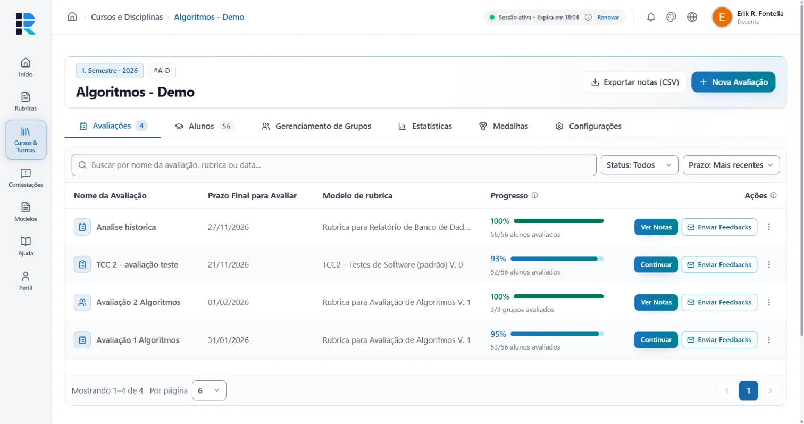
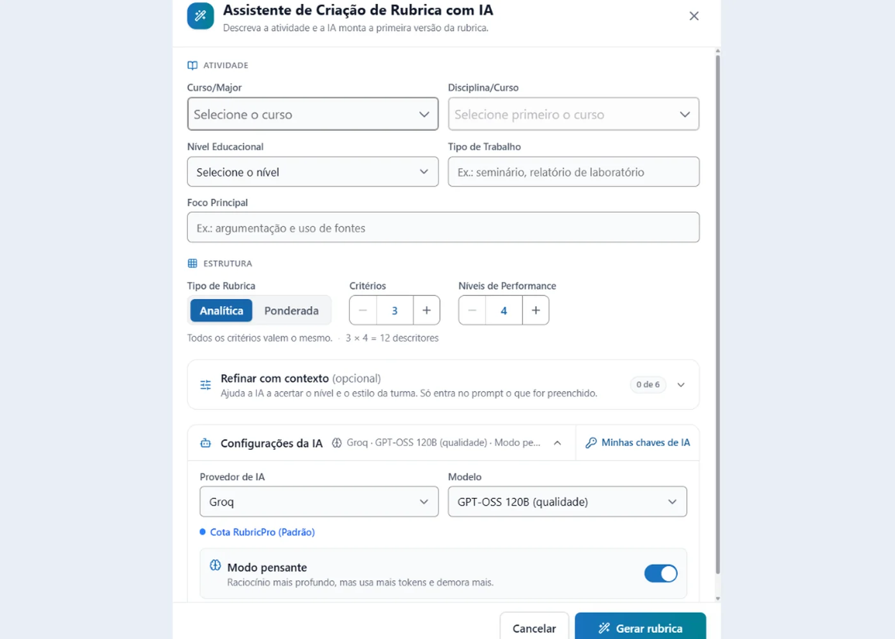
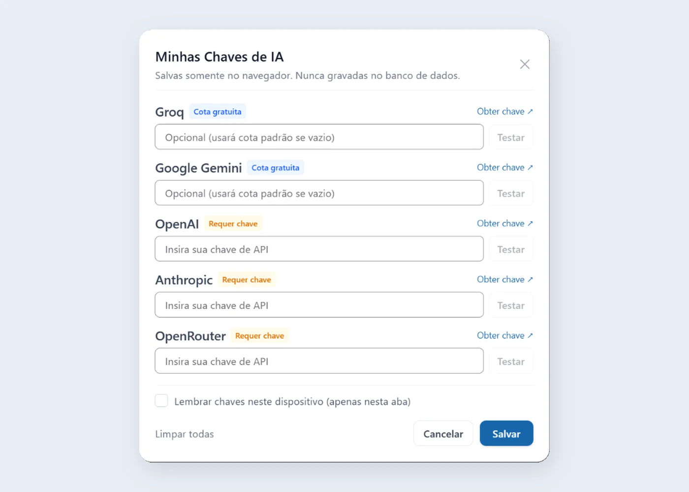

LIAA 2026.2 · Unipampa · plataforma RubricPro & módulo de IA do TCC
O RubricPro cobre o ciclo avaliativo inteiro do professor — rubricas, turmas, correção aluno por aluno e estatísticas da sala. Na LIAA, blindamos o motor de IA da plataforma por um gateway único: cinco provedores sob um contrato, saída validada e fallback que nunca gasta a chave paga sem avisar.
IApiStrategy) que todo provedor implementaContexto · Muito além de gerar rubricas
Criado por Erik Fontella e Matheus Lemes Fialho e já em produção em rubricpro.com.br, o RubricPro acompanha o professor das turmas até o raio-X das notas. O módulo de IA da LIAA vive dentro desse ecossistema real.

Critério 01 · O problema
Alinhar critérios, objetivos e descritores de cada nível consome horas do professor.
estimativa do grupo, set/2026
Com uma chave única no servidor, o limite do provedor trava todo mundo ao mesmo tempo.
A versão anterior dependia só de Gemini e Groq. Trocar de modelo exigia mexer no código.
Modelos devolvem texto extra, critérios sem todos os níveis ou pesos que não somam 100.
Critério 02 · Como funciona
O professor descreve a atividade. O gateway calcula quantos tokens a rubrica precisa, escolhe a estratégia do provedor e só entrega o que passou pelo esquema.


Experimente · orçamento de tokens
Critério 03 · A pergunta de 15/09
Depende de o provedor já existir. Medido no código do gateway, em linhas.
Uma entrada no catálogo: id, provedor, rótulo, ordem e teto de tokens. Nada mais muda.
Uma classe que implementa IApiStrategy e uma linha de registro no gateway. O OpenRouter veio quase de graça: reaproveita a estratégia compatível com a OpenAI.
wc -l em src/routes/api/ai/strategies/, 23/11/2026 · barras claras = código compartilhado
Critério 04 · Experimento
Mesmo pedido, mesmas instruções, 20 execuções por modelo. O banco de testes chama a estratégia de cada provedor direto, sem fallback, e confere o que voltou. O C1 é a rubrica de TCC 4×4 que todo modelo recebe; o C2, um seminário 5×4 com pesos que somam 100. Nesta rodada entraram os três modelos com chave disponível.
● Rodada oficial · 23/11/2026 · 60 execuções · 3 de 6 modelosMediana do tempo total por modelo, com a faixa entre o 1º e o 3º quartil. O ponto escuro marca quando chegou o primeiro token.
O Gemini 2.5 Flash raciocina por dentro antes de escrever: cerca de 8 s sem nenhum token visível. O Claude Haiku 5.5 começa em 0,6 s, mas escreve a justificativa pedagógica antes da rubrica. Tempos de uma rodada, num computador, em 23/11.
JSON puro que passou no esquema Zod sem conserto, com o intervalo de confiança de 95% (Wilson). Com n = 5 ou 10, “100%” ainda quer dizer “pelo menos 57% ou 72%”.
C2, Gemini: 2 das 5 chamadas voltaram 429 da cota gratuita. As 3 que responderam passaram em tudo.
JSON direto, Gemini: 4 respostas pararam em cerca de 220 caracteres. O pipeline do app reparou a quinta (○), mas ela saiu com 1 critério dos 4 pedidos: passou no esquema e falhou nos invariantes.
Em US$, pela mediana de cada modelo no modo pensante. Groq e Gemini rodam na cota gratuita do servidor; o valor é o que custariam no plano pago.
Tokens estimados por caracteres ÷ 4, com os preços de 23/11 em prices.json. O raciocínio interno do Gemini é cobrado como saída e não aparece no texto, então o valor dele é um piso.
Em JSON direto, o gateway reserva 1.663 tokens. O Gemini 2.5 Flash gasta quase tudo raciocinando e corta o JSON. No modo pensante, a reserva sobe para 4.413 e ele faz 10 de 10. A calculadora acima dá os mesmos dois números.
max_tokens em runs.jsonl · estimateRubricTokenBudget
No piloto, o Claude Haiku 5.5 recusava a geração (stop_reason: refusal). O prompt herdado pedia a “corrente de pensamento (Chain of Thought)”, e o pedido explícito de expor o raciocínio provavelmente acionava um filtro do modelo (hipótese nossa; a API não diz o motivo). Trocamos por “justificativa pedagógica estruturada” e desligamos o raciocínio oculto, que era redundante: 20 de 20.
BaseThinkingStrategy.ts · piloto de 23/11
No piloto, ele devolvia 503 (alta demanda) no servidor do Google, e em produção o fallback do app já trocava sozinho para o 2.5 Flash. A rodada usou o 2.5 Flash, o modelo estável do catálogo. Mesmo assim, a cota gratuita barrou 2 das 20 chamadas.
meta.json · erros por código no summary.json
Groq · cota do sistema
Gemini · cota do sistema · no lugar do 3.8 Flash
Anthropic · chave pessoal
OpenAI · chave pessoal
OpenRouter · chave pessoal
OpenRouter · chave pessoal
| Caso | Modelo | n | Sem reparo (IC95) | Pipeline | Invariantes | 1º token (s) | Total (s) [p25–p75] | Tokens saída | US$/rubrica |
|---|
* custo equivalente do plano pago; no app, Groq e Gemini usam a cota gratuita do servidor. Gemini C2: 2 chamadas com 429. Gemini JSON direto: custo de respostas cortadas.
bench/results/2026-11-23T16-25-56/summary.json · medianas sobre as chamadas que responderam · tokens e custo estimados
Um endpoint só de desenvolvimento chama strategy.streamText de cada provedor, sem fallback, cota ou Firestore, a 0,7 de temperatura e com 2,5 s entre chamadas. Para cada resposta:
RubricJsonSchema sem nenhum conserto;Commit 4934bd5, git limpo. Prompts com hash fixo (C1 4d7f329b…, C2 ca2a2861…). A qualidade pedagógica das rubricas ficou fora desta rodada: o banco de testes mede forma, tempo e custo.
bench/results/2026-11-23T16-25-56 · RubricBench · commit 4934bd5
Critério 05 · Linha do tempo
Critério 06 · Rigor
São 5 a 10 execuções por modelo e caso, numa rodada, num computador. “Menos de 15 s” vale para as medianas; o 3º quartil do Gemini 2.5 Flash passou disso (15,7 s no C1). “Zero erro estrutural” vale para o modo pensante (43/43); em JSON direto, o Gemini errou 5 de 5. Tokens e custo são estimados (≈4 caracteres por token).
O Zod e os invariantes garantem a forma (critérios, níveis, pesos). A qualidade pedagógica das rubricas não foi avaliada nesta rodada.
Modelos locais pequenos ficaram fora do escopo da disciplina, por decisão combinada em 15/09.
A chave pessoal tira a conta do servidor, mas o professor paga o provedor. Por isso não há troca automática.
Critério 07 · Entregas
As entregas da LIAA com material próprio. As semanais de evolução estão resumidas na linha do tempo.
Da ideia do gateway ao plano de experimentos, entregues no Classroom.
Primeira apresentação: Strategy, fallback, BYOK, modo pensante e Zod.
APIs online, modelos pelo catálogo, orçamento de tokens e fallback só no grátis.
Contexto, plataforma completa, solução, experimentos e o vídeo de 3:18 no topo com abertura/fechamento em anime, telas reais e legendas.
Síntese em vídeo produzida com IA sobre a evolução do projeto ao longo do semestre.
Seis dicas práticas tiradas do RubricPro, do GitExpert Check e da avaliação de artefatos com LLMs.